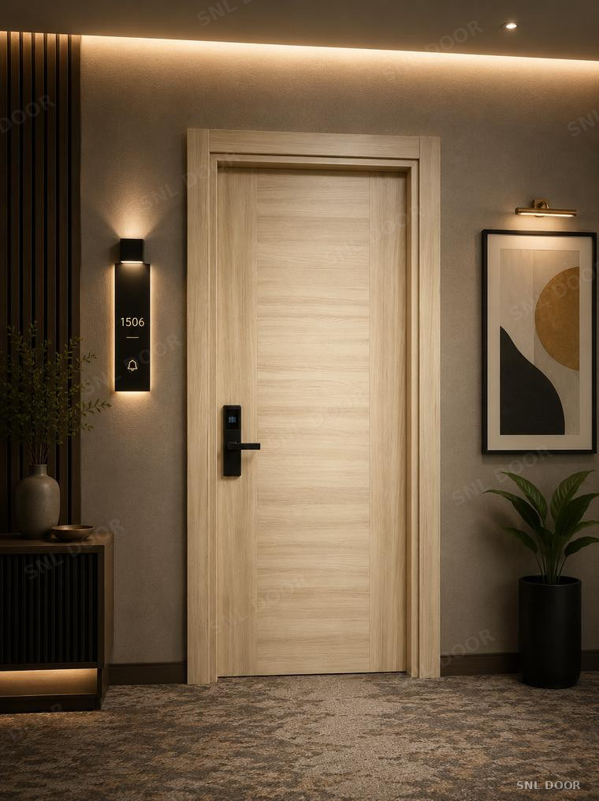
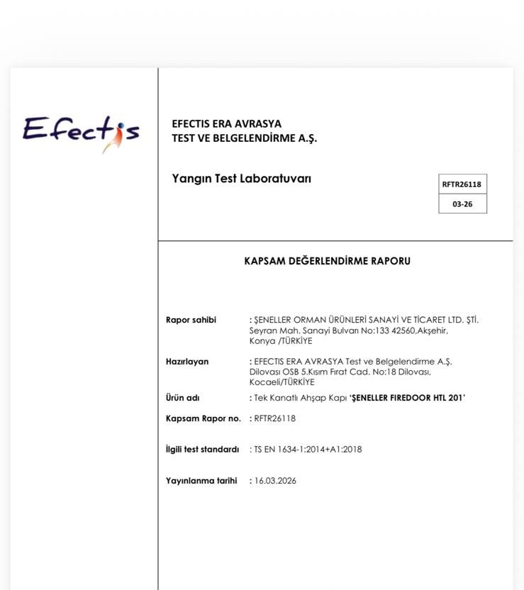

Yangına Dayanıklı
Yangına DayanıklıTeak FR
- Sertifika
- EI 30 · E 30 · TS EN 1634-1
- Yüzey
- Melamin / Lake / PVC
- Kasa
- 48 mm MDF, duman fitilli
- Aksesuar
- Otomatik kapatıcı · Giyotin · Yaprak menteşe
EI 30 / E 30 belgeli iç kapılar. Otel, yurt ve kamu projeleri için; bağımsız laboratuvarda TS EN 1634-1'e göre test edildi.

Yangına Dayanıklı
Yangına dayanımlı kapılarımız, bağımsız bir test ve belgelendirme kuruluşu tarafından test edilmiştir.